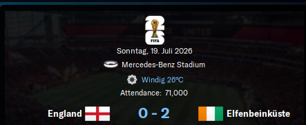

Burzel erreicht die Elfenbeinküste – ein Land voller Rhythmen, Farben und Geschichten. Zwischen tropischer Hitze und kultureller Tiefe beginnt ein Kapitel, das von Natur und Gemeinschaft getragen wird.
🌍 Ankunft in Abidjan
Burzel – frisch gekrönt als Asiens Champion – betritt afrikanischen Boden.
ASEC Mimosas, einer der traditionsreichsten Klubs der Elfenbeinküste, hat ihn verpflichtet.
Doch die Euphorie bleibt aus.
🧊 Kalter Empfang
Der Vorstand steht hinter ihm.
Sie sehen in Burzel den Mann, der Strukturen schafft, Talente formt, Titel holt.
Aber der Rest?
- Fans: misstrauisch
- Presse: skeptisch
- Spieler: abwartend
„Was will ein Europäer hier? Was weiß er von uns?“
🧠 Burzels Gedanken
„Ich bin nicht hier, um gemocht zu werden.
Ich bin hier, um zu zeigen, was möglich ist.“
Er kennt das Gefühl.
Er hatte es in Nagoya.
Und er weiß:
Respekt wird nicht geschenkt – er wird erarbeitet.
📖 Epilog
„Ein leeres Stadion ist kein Problem.
Ein leeres Vertrauen schon.
Aber ich habe schon größere Mauern eingerissen.“
🔥 Der radikale Schnitt
Burzel lässt keine Zweifel:
29 Spieler stehen auf der Verkaufsliste.
Gesamter Marktwert: 233 Millionen Euro.
„Ich brauche keine Namen. Ich brauche Charakter.“
Die verbliebenen 22 Spieler?
Sie werden neu geformt – physisch, mental, taktisch, emotional.
🏋️♂️ Der neue Trainingsplan
- Individuelles Einzeltraining: Jeder Spieler bekommt ein maßgeschneidertes Programm
- Taktikschule: Vom Positionsspiel bis zur Pressingmechanik
- Mentale Gespräche: Burzel spricht mit jedem – nicht als Trainer, sondern als Mentor
Tagesablauf:
- 6:30 Uhr: Athletik
- 9:00 Uhr: Taktik
- 13:00 Uhr: Videoanalyse
- 16:00 Uhr: Einzeltraining
- 19:00 Uhr: Gesprächsrunden
„Ich mache euch zu Meistern. Wenn ihr bereit seid, zu leiden.“
🧠 Gespräche mit dem Vorstand
Burzel fordert mehr als nur Vertrauen.
Er verlangt Strukturreform:
- 🔬 Medizinisches Upgrade: Modernste Diagnostik und Regeneration
- 🧪 Scouting-System: Datenbasiert, global vernetzt
- 🧑🏫 Trainerteam-Erweiterung: Spezialisten für Technik, Mentalität, Ernährung
- 🤝 Partnervereine: Kooperationen in Europa und Südamerika
„Wenn wir Champions-League-Sieger werden wollen, müssen wir wie Sieger denken.“
🏋️♂️ Eine Woche, ein Ziel
Die erste Woche unter Burzel war kein Trainingslager – sie war ein Bootcamp.
Die Spieler wurden neu geformt:
- Kondition bis zur Erschöpfung
- Taktik bis ins Detail
- Mentalität bis zur Selbstreflexion
„Ihr seid keine Talente mehr. Ihr seid Werkzeuge für Siege.“
⚽ Das erste Spiel: ASEC vs Abo
Die Spannung war greifbar.
Und dann – Explosion.
Endstand: 11:0 für ASEC Mimosas.
Ein historischer Sieg, der in die Vereinschronik eingeht.
🌟 Held des Spiels: Mohamed Diabagate
- 5 Tore
- 2 Vorlagen
- 10.0 Bewertung
- 12 Schüsse, 8 Dribblings, 6 Schlüsselpässe
„Ich habe noch nie so gespielt. Burzel hat etwas in mir geweckt.“
🧠 Nach dem Spiel
„Das war kein Zufall. Das war der Anfang.
Wer jetzt denkt, er sei fertig, wird zurückgelassen.
Champions-League-Sieger entstehen nicht in einem Spiel – sondern in jedem einzelnen Tag.“
📞 Gespräche mit dem Vorstand
- Neue medizinische Geräte bestellt
- Scouting-Abteilung wird verdoppelt
- Gespräche mit Partnervereinen in Frankreich und Ghana laufen
- Ziel: Jugendpipeline + internationale Vernetzung
🌍 Burzel baut Brücken
Nach dem historischen 11:0-Sieg und der internen Neuausrichtung geht Burzel den nächsten Schritt:
Er öffnet ASEC Mimosas für die Welt – mit einem Netzwerk aus Partnervereinen, das strategisch, kulturell und sportlich neue Horizonte eröffnet.
🤝 Die neuen Partnervereine
- Charlton – England – Sky Bet League One
- Club Africain – Tunesien – Ligue 1
- Colo Colo – Chile – Primera División
- FC Midtjylland – Dänemark – 3F Superliga
- RSC Anderlecht – Belgien – Jupiler Pro League
- Sporting CP – Portugal – Primeira Liga
- WAFA SC – Ghana – Premier Division
🧠 Burzels Strategie
„Ein Partnerverein ist kein Logo auf Papier.
Es ist ein Zugang zu Ideen, Talenten und Perspektiven.“
- Charlton: Zugang zum englischen Nachwuchs
- Sporting CP: Technische Ausbildung auf Top-Niveau
- WAFA SC: Talentpipeline aus Westafrika
- Anderlecht & Midtjylland: Datenbasiertes Scouting & moderne Trainingsmethoden
- Colo Colo & Club Africain: Kulturelle Tiefe und Spielintelligenz
📖 Epilog
„Wenn du wachsen willst, musst du dich öffnen.
Und wenn du dich öffnest, musst du wissen, wohin du blickst.“
🧑💼 Burzels erster Transfer
Es ist der 30. August 2025. Burzel sitzt spätabends vor dem Bildschirm – das Budget ist knapp, die Erwartungen hoch.
Und dann taucht er auf:
Isaac Cissé, 21 Jahre alt, zentraler Mittelfeldspieler – beschrieben als „hart arbeitend“, mit einem Blick für Räume und einem Motor, der nie stoppt.
📄 Vertragsdetails
- Ablösesumme: €120.000
- Gehalt: €19.500 pro Jahr
- Vertragsdauer: 17.07.2026 – 31.07.2028
- Rolle im Team: Rotationsspieler
- Treuebonus: €1.300
- Beraterhonorar: €850
🔍 Warum Cissé?
„Er ist kein fertiger Spieler – aber er ist ein fertiger Charakter.“
- Kampfgeist: Nie zu schade für die Drecksarbeit
- Entwicklungspotenzial: Mit 21 noch formbar
- Teamplayer: Keine Starallüren, aber viel Ehrgeiz
✍️ Burzels Notizbuch
„Mein erster Kauf. Kein Star. Kein Risiko.
Aber vielleicht der Anfang von etwas Großem.“
🏆 Zwei Titel, ein Statement
Burzel hat es wieder getan – diesmal in Afrika.
Mit ASEC Mimosas gewinnt er:
- Die Premier Division der Elfenbeinküste
- Den National Cup der Elfenbeinküste
Ein Doppelschlag, der nicht nur die Liga erschüttert, sondern auch die Skeptiker verstummen lässt.
⚽ Der Weg zum Ruhm
- Taktische Disziplin: Die neue Formation greift, das Pressing sitzt.
- Individuelle Entwicklung: Spieler wie Diabagate explodieren unter Burzels Führung.
- Mentaler Wandel: Aus Mitläufern werden Sieger.
„Ihr wolltet Beweise. Jetzt habt ihr zwei.“
🧠 Burzels Gedanken
„Ich bin nicht hier, um zu gefallen.
Ich bin hier, um zu gewinnen – und zu verändern.“
📖 Epilog
„Zwei Pokale.
Und das Vertrauen einer Nation.
Jetzt beginnt die echte Arbeit.“
🌍 Historischer Aufstieg in der FIFA-Weltrangliste
Burzel, der Mann mit dem goldenen Händchen, sorgt für das nächste Wunder:
Die Nationalmannschaft der Elfenbeinküste, unter seiner Leitung, springt um 18 Plätze nach oben – auf Rang 19 der FIFA-Weltrangliste.
Kein Land macht einen größeren Sprung.
🧠 Burzels Gedanken
„Ich wollte nicht nur Titel.
Ich wollte Respekt – und jetzt hört die Welt zu.“
📊 Was dahinter steckt
- Taktische Disziplin: Die Nationalelf spielt strukturiert, mutig, effizient
- Spielerentwicklung: Lokale Talente wie Diabagate und Cissé blühen auf
- Mentaler Wandel: Aus Außenseitern werden Herausforderer
🗣️ Stimmen aus dem Verband
„Burzel hat nicht nur Spiele gewonnen.
Er hat unsere Identität neu definiert.“
📖 Epilog
„Rang 19 ist eine Zahl.
Aber für uns ist es ein Versprechen –
Dass Afrika nicht nur mitspielt, sondern mitgestaltet.“
🌍 Die Welt staunt
Die Elfenbeinküste unter Burzel schreibt weiter Geschichte:
Ein Sieg im WM-Achtelfinale gegen die USA – und das nach vorherigen Erfolgen gegen Argentinien, Japan und Ägypten.
Was als Außenseiter begann, ist nun ein ernstzunehmender Titelkandidat.
„Ein weiteres Kapitel in diesem wunderbaren Märchen“, sagt ein Verbandsvertreter.
⚽ Der Weg ins Viertelfinale
- Taktisch diszipliniert gegen Argentinien
- Kämpferisch clever gegen Japan
- Effizient und eiskalt gegen Ägypten
- Mental stark gegen die USA
Burzel hat aus einer talentierten, aber unterschätzten Mannschaft ein Turniermonster gemacht.
🧠 Burzels Gedanken
„Wir sind nicht mehr die Überraschung.
Wir sind die Bedrohung.“
📖 Epilog
„Wenn du vier Giganten schlägst, bist du kein Märchen mehr.
Du bist Realität – und die Welt muss sich daran gewöhnen.“
🏟️ Mercedes-Benz Stadium, 71.000 Zuschauer
Burzel steht an der Seitenlinie.
Die Uhr zeigt Minute 96.
Abpfiff. 2:1. Sieg gegen Argentinien.
Die Elfenbeinküste steht im Halbfinale der Weltmeisterschaft.
⚽ Spielverlauf
- 29. Minute: Kapitän Abakar Sylla steigt hoch – Kopfball, Tor.
- 34. Minute: Argentinien gleicht aus mit einem Distanzhammer.
- 96. Minute: Velasco trifft – aber zu spät. Der Sieg gehört Afrika.
Statistik?
- Ballbesitz: 36 %
- Schüsse: 10
- Herz: 100 %
🌟 Spieler des Spiels: Abakar Sylla
- Position: Innenverteidiger
- Bewertung: 8.5
- Kopfballduelle gewonnen: 94 %
- Mentalität: Unerschütterlich
„Ich spiele für mein Land. Und für den Mann, der uns glauben ließ.“
🧠 Burzels Gedanken
„Sie hatten mehr Ballbesitz.
Aber wir hatten mehr Glauben.“
📖 Epilog
„Argentinien ist gefallen.
Nicht durch Zufall – sondern durch Überzeugung.
Jetzt beginnt das Finale im Kopf.“
🔥 Der Kampf beginnt – 10. Minute, Rote Karte
Ein früher Schock:
Ein Platzverweis
Doch statt zu zerbrechen, wächst das Team über sich hinaus.
⚽ Tore & Triumph
- Kessié eröffnet mit einem wuchtigen Abschluss.
- Kouamé tanzt durch die Abwehr – 2:0.
- Haller setzt den Schlusspunkt – 3:2.
- Frankreichs Treffer: Mbappé und Upamecano – zu wenig.
🌟 Spieler des Spiels: Ibrahim Sangaré
- Bewertung: 7.8
- Zweikampfmonster
- Unermüdlich trotz Unterzahl
„Manchmal braucht man keine Überzahl – nur Überzeugung.“
🧠 Burzels Notizen
„Frankreich hatte mehr Spieler.
Aber wir hatten mehr Herz.“
📖 Epilog
„Ein Mann weniger. Drei Tore mehr.
Das ist kein Zufall. Das ist Geschichte.“
🏆 Das große Finale – England fällt 
Im Mercedes-Benz Stadium vor einer elektrisierten Kulisse besiegt die Elfenbeinküste England mit 2:0.
Die Torschützen:
- Karim Konaté – eiskalt im Abschluss
- Jonathan Bamba – Spieler des Spiels, unaufhaltsam auf dem Flügel
🌍 Der Weg zur Krone

- 8:0 gegen Nigeria – ein Statement
- 4:2 gegen Deutschland – taktische Meisterleistung
- 3:2 gegen Frankreich – Sieg in Unterzahl
- 2:0 gegen England – der letzte Schritt
Burzel hat aus Außenseitern Weltmeister gemacht.
🧠 Burzels Gedanken
„Ich habe ihnen gesagt: Wenn ihr bereit seid zu leiden, könnt ihr alles gewinnen.
Heute haben sie bewiesen, dass Glaube größer ist als jede Statistik.“
📖 Epilog
„Weltmeister.
Nicht durch Zufall.
Sondern durch Arbeit, Mut und Liebe zum Spiel.“
🗣️ Gespräche, Geduld, Durchsetzungskraft
Burzel hat nicht nur auf dem Platz bewiesen, dass er ein Sieger ist – sondern auch am Verhandlungstisch.
Nach zahlreichen Gesprächen, hitzigen Diskussionen und strategisch klugen Argumenten wurde endlich genehmigt, was lange überfällig war:
Die Modernisierung des Nachwuchsrekrutierungsnetzwerks.
🧠 Burzels Argumente
- „Wenn wir Weltmeister sein können, dann können wir auch Weltklasse ausbilden.“
- „Talente wachsen nicht von allein – sie brauchen Struktur, Förderung und Vision.“
- „Ein starkes Fundament ist der einzige Weg, nachhaltigen Erfolg zu sichern.“
✅ Ergebnis
- Das Netzwerk wird flächendeckend aktiv
- Die Infrastruktur für Jugendförderung wird modernisiert
- Der Vorstand erkennt: „Wir sind ehrgeizig genug, neu zu denken und zu investieren.“
📖 Epilog
„Ich habe nicht für mich verhandelt.
Ich habe für die Zukunft verhandelt.
Und heute beginnt sie.“
⚽ Der Gegner: Al-Hilal Omdurman
Wettbewerb: Hinspiel der 1. Runde CAF Champions League
Ergebnis: 12:0 für ASEC Mimosas
Ein Spiel, das in die Geschichtsbücher eingeht.
Burzel schickt seine Mannschaft auf den Platz – und sie liefern ein Spektakel, das Afrika erschüttert.
🌟 Held des Tages: Mohamed Yabré
- 8 Tore
- 10.0 Bewertung
- Unaufhaltsam, unermüdlich, unvergesslich
„Ich habe noch nie so gespielt. Burzel hat uns entfesselt.“
🧠 Burzels Gedanken
„Ballbesitz ist eine Zahl.
Dominanz ist ein Gefühl.
Und heute haben wir beides neu definiert.“
📖 Epilog
„12 Tore.
Kein Gegenschuss.
Das ist nicht nur ein Sieg – das ist eine Botschaft.“
🏆 Elfenbeinküste Supercup-Finale: ASEC vs. Sol FC
Burzel betritt das Stadion mit einem klaren Ziel:
Den ersten Titel der neuen Saison holen.
Und seine Mannschaft liefert – mit einem überzeugenden 6:1-Sieg gegen Sol FC.
⚽ Die Torschützen
- Isaac Cissé (14') – Der erste Neuzugang trifft früh
- Simon Adingra (40', 44', 69') – Ein Hattrick wie aus dem Lehrbuch
- Franck Kessié (90') – Der Kapitän setzt den Schlusspunkt
- Kéï Konan (90') – Ehrentreffer für Sol FC
🌟 Spieler des Spiels: Simon Adingra
„Ich wollte zeigen, dass wir bereit sind – und Burzel hat uns genau dafür vorbereitet.“
🧠 Burzels Gedanken
„Ein Finale ist kein Ort für Zweifel.
Es ist ein Ort für Bestätigung.“
📖 Epilog
„Ein neuer Titel.
Ein neuer Maßstab.
Und ein Team, das bereit ist, noch größer zu werden.“
🧭 Von Dunedin bis zur Weltspitze
Burzel erreicht einen Meilenstein, der mehr ist als nur eine Zahl:
200 Spiele als Trainer.
Begonnen hat alles im Dezember 2021 bei Dunedin City Royals FC in Neuseeland.
Was folgte, war eine Karriere, die Kontinente überbrückte und Kulturen verband.
🏆 Stationen & Erfolge
- Australien & Neuseeland: Die ersten Schritte, das Fundament
- Nagoya Grampus (Japan): Triple-Sieger, AFC-Champions-League-Gewinner, Stadionbauer
- Elfenbeinküste & ASEC Mimosas: Weltmeister, Supercup-Sieger, Jugendreformer
🧠 Burzels Gedanken
„Ich habe nie gezählt.
Ich habe nur gebaut.
Und heute sehe ich, was aus 200 Entscheidungen geworden ist.“
📖 Epilog
„200 Spiele.
Und jedes einzelne war ein Kapitel.
Aber das Buch ist noch lange nicht zu Ende.“
🏟️ Heimvorteil mit Geschichte
Burzel steht vor dem Mikrofon.
Vor dem nächsten Heimspiel sagt er, was alle denken – aber keiner ausspricht:
„Die Gegner freuen sich nicht gerade auf den Trip hierher.
Das bringt uns schon vor dem Anpfiff in eine gute Position.“
Das Stade Félix Houphouët-Boigny ist mehr als ein Stadion.
Es ist ein Ort der Energie, der Hitze, der Stimmen – und der Siege.
🔊 Die Atmosphäre
- Trommeln, Gesänge, Farben – ein visuelles und akustisches Inferno
- Spieler von ASEC: motiviert bis in die Haarspitzen
- Gegner: nervös, überfordert, beeindruckt
🧠 Burzels Gedanken
„Wenn du willst, dass deine Mannschaft fliegt,
musst du ihnen den Wind liefern – und das tun unsere Fans.“
📖 Epilog
„Manche Teams haben Heimspiele.
Wir haben Heimkriege.
Und wir gewinnen sie – bevor der Ball rollt.“
💎 Der Juwel: Konan Traoré
- Position: VR/FR (Rechter Verteidiger / Flügelspieler)
- Alter: 18 Jahre
- Ausbildung: ASEC Mimosas Jugendakademie
- Status: Unverkäuflich – zumindest laut Herz, nicht laut Markt
Burzel weiß, was er hat.
Konan Traoré ist nicht nur ein Spieler – er ist ein Projekt, ein Versprechen, ein Symbol für die neue Generation.
🗣️ Die Verhandlungen mit Real Madrid
Die Königlichen klopfen an.
Diskret, aber bestimmt.
Sie wollen Traoré – und sie wissen, dass Burzel nicht leicht zu überzeugen ist.
„Ich höre zu. Aber ich verkaufe keine Träume – ich entwickle sie.“
Burzels Forderungen:
- Freundschaftsspiel bei ASEC
- Weiterverkaufsbeteiligung
📖 Epilog
„Konan ist bereit für die Welt.
Aber die Welt muss bereit sein, ihn richtig zu behandeln.“
🕵️ Besuch aus Spanien
Die Führungsabteilung von Real Madrid landet in Abidjan.
Ziel: das Champions-League-Spiel von ASEC Mimosas.
Anlass: Konan Traoré, der VR/FR-Juwel, den Burzel seit Monaten formt wie ein Bildhauer aus Leidenschaft.
⚽ Das Spiel – Bühne für Talent
- Defensiv stabil – antizipiert wie ein Veteran
- Offensiv explosiv – präzise Flanken, mutige Vorstöße
- Mental präsent – trotz der spürbaren Beobachtung
Die Scouts notieren. Die Kameras zoomen.
Burzel bleibt ruhig – er weiß, was kommt.
🧠 Burzels Gedanken
„Ich habe ihn nicht für Madrid ausgebildet.
Ich habe ihn für Größe ausgebildet – und wenn Madrid das erkennt, ist es ihr Privileg.“
📖 Epilog
„Sie kamen, um zu sehen.
Sie gingen, um zu überlegen.
Und Konan? Er spielte, als wäre niemand da – außer seinem Traum.“
💰 Der Deal des Jahrzehnts
Nach intensiven Verhandlungen, Beobachtungen und taktischem Feilschen ist es offiziell:
Real Madrid legt 450 Millionen Euro auf den Tisch, um Konan Traoré von ASEC Mimosas zu verpflichten.
Ein Rekordafrikanischen Fußball.
🧠 Burzels Gedanken
„Ich habe ihn nicht verkauft.
Ich habe ihn freigelassen – für eine Geschichte, die größer ist als wir alle.“
📊 Vertragsdetails (fiktiv, aber episch)
- Ablösesumme: €450 Mio
- Freundschaftsspiel: bei ASEC
- Weiterverkaufsbeteiligung: vertraglich gesichert
- Rückennummer: 22 – Symbol für seine doppelte Rolle: Verteidiger & Flügel
🗣️ Stimmen aus Madrid
„Wir haben nicht nur einen Spieler verpflichtet.
Wir haben einen neuen Archetyp für den modernen Fußball geholt.“
📖 Epilog
„450 Millionen.
Aber der wahre Wert liegt nicht im Geld –
sondern in dem, was Konan für Afrika bedeutet.“
⏳ Vertragsende in Sicht
Die Gerüchteküche brodelt:
Burzels Vertrag bei ASEC Mimosas läuft zum Saisonende aus.
Der Vorstand bereitet sich vor – Gespräche stehen an, aber auch Alternativen liegen bereit.
🧑💼 Antonio Piche im Fokus
ASECs Scout Antonio Piche hat sich offiziell beworben.
Er gilt als Favorit, sollte Burzel sich für den Abschied entscheiden.
Doch: Kann man einen Weltmeister ersetzen?
🧠 Burzels Gedanken
„Ich bin nicht müde.
Ich bin neugierig.
Und manchmal bedeutet Größe auch, Platz zu machen.“
📖 Epilog
„Wenn ich gehe, dann nicht, weil ich muss.
Sondern weil ich will, dass ASEC weiter wächst –
auch ohne mich.“
🗣️ Die Stimme aus dem Mittelfeld
Asses Maïga, der kreative Taktgeber von ASEC, meldet sich zu Wort – nicht mit einem Pass, sondern mit einer Botschaft:
Er will, dass Burzel bleibt.
Nicht nur als Trainer, sondern als Architekt des Erfolgs.
„Er macht großartige Arbeit.
Wenn wir Kontinuität wollen, müssen wir ihn halten.“
🔁 Der Wendepunkt?
Während der Vorstand über Alternativen nachdenkt, bringt Maïga das Entscheidende ins Spiel:
Vertrauen. Loyalität. Stabilität.
Die Mannschaft steht hinter ihrem Trainer – und das verändert die Dynamik der Verhandlungen.
🧠 Burzels Gedanken
„Wenn ein Spieler für dich kämpft,
dann hast du mehr erreicht als jede Trophäe.“
✅ Vorstand begeistert
Burzel hat geliefert – wieder einmal.
Das Pflichtziel für die Saison 2026/27 wurde erreicht:
Die entscheidenden Runden der Champions League.
Der Vorstand ist begeistert, die Stimmung im Verein elektrisiert.
„Wie geplant. Wie versprochen. Wie Burzel.“
🔁 Auswirkungen auf Vertragsgespräche
Nach dem öffentlichen Rückhalt von Asses Maïga und dem Erreichen des wichtigsten Saisonziels,
steht Burzel nun in einer verhandelbaren Position:
- Verlängerung wahrscheinlich
- Vertrauen gestärkt
- Alternativen rücken in den Hintergrund
🧠 Burzels Gedanken
„Ich habe nie um einen Vertrag gespielt.
Ich habe für ein Projekt gespielt – und das Projekt lebt.“
🏆 Das Triple ist vollendet
- Meisterschaft ✅
- Nationalpokal ✅
- Supercup ✅
Aber Burzel denkt größer.
Die Champions League fehlt noch – das ultimative Symbol kontinentaler Dominanz.
⚔️ Der Weg zur Krone
ASEC Mimosas hat sich bereits qualifiziert für die CAF Champions League 2025/26.
Die ersten Gegner: Power Dynamos aus Sambia.
Zwei Spiele – Hin und Rück – entscheiden, ob der Traum weiterlebt.
🧠 Burzels Gedanken
„Ich habe Afrika erobert – fast.
Aber die Champions League ist kein Pokal.
Sie ist ein Vermächtnis.“
📖 Epilog
„Wenn wir das schaffen,
dann haben wir nicht nur alles gewonnen –
wir haben Geschichte geschrieben.“
🗣️ Lob von einer Legende
Didier Zokora, ehemaliger Nationalspieler und Publikumsliebling, meldet sich zu Wort:
Er lobt nicht nur die sportlichen Erfolge von Burzel – sondern vor allem dessen Charakter.
„Er hat ASEC nicht nur zum Triple geführt –
er hat dem Klub eine Seele gegeben.“
🏆 Der Kontext
- ASEC steht auf Platz 1
- Form: WWDWW – kaum zu stoppen
- Managerbewertung: A+
- Nächstes Spiel: gegen Sporting Gagnoa
- Stimmung: Fans euphorisch, Vorstand beeindruckt – und nun auch die Legenden des Landes
🧠 Burzels Gedanken
„Taktik bringt Punkte.
Charakter bringt Vertrauen.
Und Vertrauen bringt Titel.“
📖 Epilog
„Wenn Männer wie Zokora dich loben,
dann weißt du: Du hast nicht nur Spiele gewonnen –
du hast Respekt verdient.“
🌍 Ein Kontinent jubelt
Die Elfenbeinküste hat es geschafft:
Sie erreicht ihre höchste Platzierung in der FIFA-Weltrangliste: Platz 5 – ein historischer Sprung um 7 Plätze.
Der neue Rekord übertrifft sogar den bisherigen Bestwert aus September 2020 (Platz 7).
🧠 Burzels Gedanken
„Wir haben nicht nur Spiele gewonnen.
Wir haben Respekt gewonnen – weltweit.“
🔁 Bedeutung für ASEC & Nationalteam
- Die Nationalmannschaft profitiert direkt von Burzels Arbeit bei ASEC
- Spieler wie Konan Traoré, Simon Adingra und Franck Kessié prägen das internationale Bild
- Der Ruf des Landes steigt – und mit ihm die Verantwortung, weiter zu liefern
📖 Epilog
„Afrika hat viele Geschichten.
Heute haben wir eine geschrieben, die die Welt liest.“
🌱 Die nächste Generation marschiert
Während Burzel mit der ersten Mannschaft das Triple holt und die Champions League anvisiert,
schreibt die ASEC U19 ihre eigene Erfolgsgeschichte:
- 24 Spiele
- 22 Siege
- 0 Niederlagen
- +145 Tore
Ein Meisterstück in der Jugendförderung.
🔥 Schlüsselspiele
- 10:0 gegen Gagnoa U19 – ein Statement
- 9:1 gegen SOL FC U19 – pure Kontrolle
- 7:1 im letzten Spiel – Krönung einer perfekten Saison
🌟 Spieler im Fokus: Sekou Koppih
Der junge Spielmacher überzeugt mit Übersicht, Technik und Führungsqualität.
Ein Kandidat für die erste Mannschaft – oder sogar für Europa?
„Ich habe gelernt, wie man gewinnt.
Aber bei Burzel lernt man, warum man gewinnt.“
🧠 Burzels Gedanken
„Ein Titel ist schön.
Aber ein System, das Titel produziert – das ist Größe.“
📖 Epilog
„Die Zukunft ist nicht morgen.
Sie ist heute – und sie trägt ASEC-Trikots.“